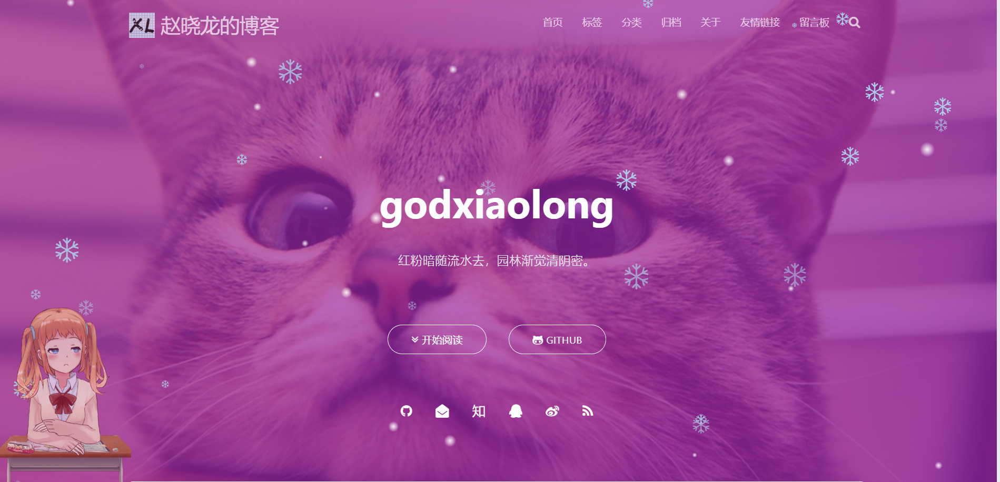

本文以作者blinkfox的matery主题为例，对主题的部分地方进行优化，进行了一些美化。
没有博客？
获取我配置好的主题？
git clone git@github.com:MUYIio/Hexo-matery-Themes.git |
须知： 不同的Hexo主题的美化方式可能存在一些差异，但也相差无几，把源代码放在合适的位置就可以。
前提条件： 进行博客主题美化前需要了解Hexo博客的目录结构，主题的目录结构！请阅读官方文档。了解 HTML、CSS、JS，了解 CSS 预处理语言 Sass、Less、Stylus,有一定的前端知识最好。
添加雪花飘落效果
效果预览：

方法：在themes/matery/source/libs/others下新建文件snow.js，并插入如下代码：
/*样式一*/ |
然后在themes/_config里libs.js.下面添加一行：
snow: /libs/others/snow.js |
在themes/matery/layout/layout.ejs里添加如下代码：
<!-- 雪花特效 --> |
最后在themes/_config添加：
# 雪花特效 |
添加动漫人物挂件
效果预览：
能根据你鼠标位置摇头，还有不同的动作，摸摸它还能说话~
方法：
1.获取模型：
npm install --save hexo-helper-live2d |
2.安装喜欢的模型：
$ npm install packagename |
将packagename换成模型名字，如我使用的模型：
$ npm install live2d-widget-model-shizuku |
模型预览：live2d-widget-models GitHub项目地址：hexo-helper-live2d
3.然后打开博客跟目录下的 _config.yml文件，添加如下代码：
live2d: |
然后上传就可以了。
添加鼠标点击爱心效果
1.在 \themes\hexo-theme-spfk\source\js 下新建文件 love.js，在 love.js 文件中添加以下代码：
!function(e,t,a){function n(){c(".heart{width: 10px;height: 10px;position: fixed;background: #f00;transform: rotate(45deg);-webkit-transform: rotate(45deg);-moz-transform: rotate(45deg);}.heart:after,.heart:before{content: '';width: inherit;height: inherit;background: inherit;border-radius: 50%;-webkit-border-radius: 500%;-moz-border-radius: 50%;position: fixed;}.heart:after{top: -5px;}.heart:before{left: -5px;}"),o(),r()}function r(){for(var e=0;e<d.length;e++)d[e].alpha<=0?(t.body.removeChild(d[e].el),d.splice(e,1)):(d[e].y--,d[e].scale+=.004,d[e].alpha-=.013,d[e].el.style.cssText="left:"+d[e].x+"px;top:"+d[e].y+"px;opacity:"+d[e].alpha+";transform:scale("+d[e].scale+","+d[e].scale+") rotate(45deg);background:"+d[e].color+";z-index:99999");requestAnimationFrame(r)}function o(){var t="function"==typeof e.onclick&&e.onclick;e.onclick=function(e){t&&t(),i(e)}}function i(e){var a=t.createElement("div");a.className="heart",d.push({el:a,x:e.clientX-5,y:e.clientY-5,scale:1,alpha:1,color:s()}),t.body.appendChild(a)}function c(e){var a=t.createElement("style");a.type="text/css";try{a.appendChild(t.createTextNode(e))}catch(t){a.styleSheet.cssText=e}t.getElementsByTagName("head")[0].appendChild(a)}function s(){return"rgb("+~~(255*Math.random())+","+~~(255*Math.random())+","+~~(255*Math.random())+")"}var d=[];e.requestAnimationFrame=function(){return e.requestAnimationFrame||e.webkitRequestAnimationFrame||e.mozRequestAnimationFrame||e.oRequestAnimationFrame||e.msRequestAnimationFrame||function(e){setTimeout(e,1e3/60)}}(),n()}(window,document); |
2.在 \themes\hexo-theme-spfk\layout\layout.ejs 文件末尾添加以下代码：
<!-- 页面点击小红心 --> |
浏览器网页标题
1.在 \themes\material-x\source\js 下新建一个 FunnyTitle.js 文件，填写如下代码：
// 浏览器搞笑标题 |
2.在 \themes\material-x\layout\layout.ejs 文件中添加如下代码：
<!--浏览器搞笑标题--> |
持续更新中…